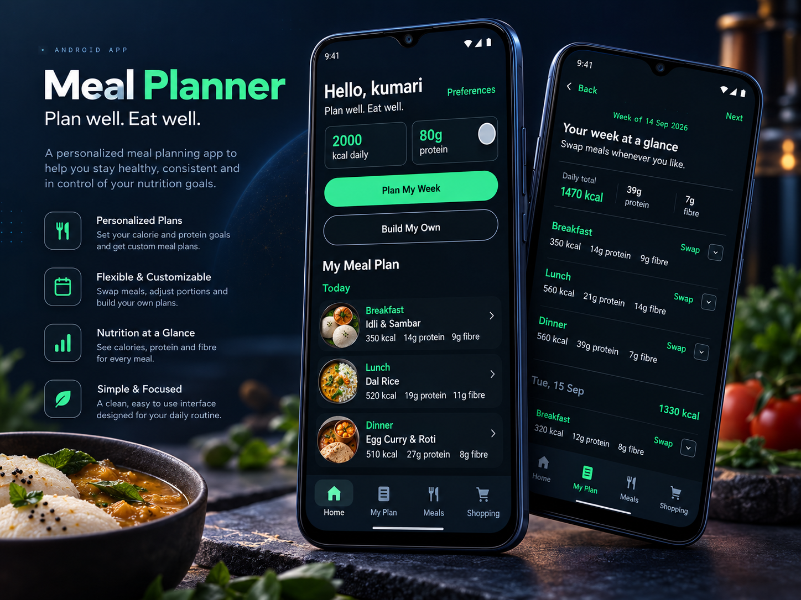

BUILD · ANDROID
Meal Planner App
A Kotlin + Jetpack Compose Android application built around personalised Indian meal planning.

Purpose
Turn a practical personal requirement into a working Android product while learning modern Android development.
Core functionality
- Personal preferences and dietary profile
- Weekly meal planning
- Nutrition targets
- Shopping-list workflow
- Saved plans and history direction
What I am learning
UI structure, state, navigation, iteration from testing, and how product requirements translate into application behaviour.
Visuals
Additional real application screenshots can be added here as the app develops.